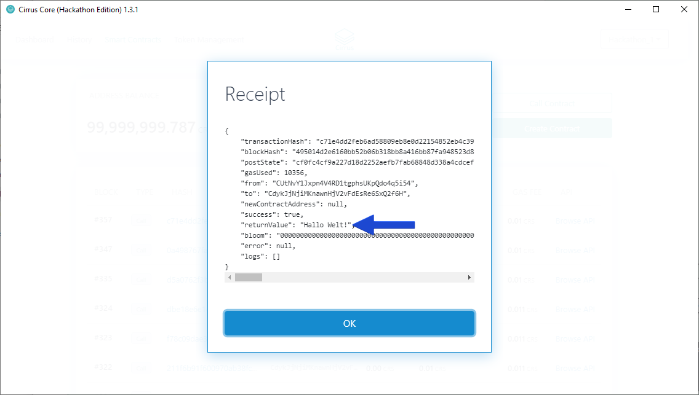

Deploying the HelloWorld2 Smart Contract Example¶
Let’s now look at extending the functionality of the HelloWorld Smart Contract we previously deployed and interacted with as part of Tutorial 2.
Building and deploying the smart contract¶
To build and deploy the “Hello World 2” smart contract, refer to:
The procedure is exactly the same, except you supply the HelloWorld2.cs file to the sct tool instead.
An overview of the code¶
The upgrade to the smart contract essentially involves modifying the Greeting property to hold an array of strings. The first thing to be aware of is that smart contracts do not persist arrays, but if you want to store a group of a particular type of data, you can adapt key-value pairs to do this. The accessors for the Greeting property wrap up the logic but rely on two other integer properties to maintain the array: Index and Bounds.
private int Index
{
get
{
return this.PersistentState.GetInt32("Index");
}
set
{
PersistentState.SetInt32("Index", value);
}
}
private int Bounds
{
get
{
return this.PersistentState.GetInt32("Bounds");
}
set
{
PersistentState.SetInt32("Bounds", value);
}
}
private string Greeting
{
get
{
Index++;
if (Index >= Bounds)
{
Index = 0;
}
return this.PersistentState.GetString("Greeting" + Index);
}
set
{
PersistentState.SetString("Greeting" + Bounds, value);
Bounds++;
}
}
You can see that the indexes are built into the keys and as far as the smart contract is concerned, it is just persisting individual pieces of data.
Because the properties contain the “array maintenance logic”, the AddGreeting() method just uses the Greeting property set accessor to add new greetings and, as before, the Greeting property get accessor supplies the SayHello() method with a greeting.
Using a dictionary approach¶
Because smart contracts use the key-value pairs, you may want to approach storing grouped data from a dictionary approach and not iterate through grouped data from start to finish at all. Take a look at this code excerpt from a C# version of an ERC-20 smart contract:
private void SetApproval(Address owner, Address spender, ulong value)
{
PersistentState.SetUInt64($"Allowance:{owner}:{spender}", value);
}
/// <inheritdoc />
public ulong Allowance(Address owner, Address spender)
{
return PersistentState.GetUInt64($"Allowance:{owner}:{spender}");
}
Allowance is effectively a 2D dictionary with two addresses being used to form the key. As the only requirement is to access the allowance for any two addresses, there is no need to keep a record of an index or bounds. In fact, the bounds of the 2D dictionary can grow as required. When storing the allowances in the above code, as far as the smart contract is concerned, it is just persisting individual pieces of data.
Calling a method on the contract for the first time¶
To begin, we are going to call the SayHello() again. From examining the code, you will see that the call receipt will give a returnValue of “Hello World” no matter how many times the method is called. The Index property updates from -1 to 0 and, from then on, remains at 0. To remind yourself how to make a method call, refer to Calling the SayHello() method
Note
If you want to check the Index value, you could try and create a method to retrieve it. In this case you must redeploy the smart contract. You don’t have to rename the smart contract because, as you saw in the last tutorial, smart contracts are identified by their address. However, it is good from a code management point of view.
Adding multiple greetings to the smart contract¶
The new smart contract method, AddGreeting(), takes a single string parameter which specifies the new greeting. To begin with, add the greeting in Polish: “Witaj świecie!”.
Again, use the Browse API hyperlink on the Smart Contracts Dashboard to make a method call on the smart contract, you will notice that there is now two methods available for the contract opposed to the one method we saw when interacting with the HelloWorld contract in Tutorial1.
{kind=link}
Again, click the Try it out button to edit the parameters and enter an additional greeting. In this example we are adding Witaj świecie!.
{kind=link}
Click the Execute button to add the additional greeting. After executing, you will see the response below.
{kind=link}
The receipt of the transaction can be seen within the Cirrus Core GUI by selecting the hash on the Smart Contracts Dashboard.
{kind=link}
We can now see that Witaj świecie! has been added as a response, this is evidenced by the returnValue in the contract call receipt.
{kind=link}
After you have added a greeting in Polish, you can add a “Hello World” greeting in some other languages. Here are some suggestions:
Hallo Welt! - German
Привет, мир! - Russian
你好，世界！ - Chinese
Hej Verden! - Danish
Cycling through the greetings¶
Use the Swagger interface to make repeat calls to SayHello().
{kind=link}
The first call you make should have a returnValue of “Hello World!”.
{kind=link}
If you have added all four languages shown previously, they will then be returned with each subsequent call. Assuming “Hej Verden!” was the last greeting added, then after it has been returned, the next call returns “Hello World!” and the cycle begins again. As an example, the next call to the SayHello() method returns the below receipt.
{kind=link}
A further call returns the next greeting.
{kind=link}
Continuing to call the SayHello() method will see the responses cycle.
What happens if SayHello() is called by a different node?¶
This is an interesting question and answering it can help clarify how smart contracts work. You can also see this in action by running two nodes and alternating the calls to SayHello() between the nodes. Assuming the smart contract holds all six greetings and the Index property begins at 0, the following results are returned:
Node1: Hello World!
Node2: Witaj świecie!
Node1: Hallo Welt!
Node2: Привет, мир!
Node1: 你好，世界！
Node2: Hej Verden!
Node1: Hello World!
and so on…
When SayHello() accesses the Greeting property, the Index property is incremented in the Greeting get accessor. As you might expect, using the ++ operator invokes the Index write accessor:
set
{
PersistentState.SetInt32("Index", value);
}
Every node receives this state update once the related transaction has been mined, and the same is true of any state update made by PersistentState.Set*(). Therefore, in terms of cycling through the greetings, the persisting of the index across the network allows each node to carry on where the last one left off.